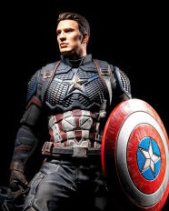

Envious of his friend Bucky Barnes’ military enlistment, and undeterred by his own multiple rejections by the U.S. Army, physical weakling Steve Rogers made one more attempt to join the march of men to fight for their country in the dark days of World War II. Rogers’ valiant wish to fight bullies wherever they were grabbed the attention of scientist Dr. Abraham Erskine, and he handpicked the idealistic young man for the Army’s Super-Soldier program under his supervision.Though Rogers learned of Erskine’s disastrous previous attempts to realize a super-soldier, Germany’s so-called “Red Skull,” he braved the process and emerged from it a new man. With a powerful body and heightened speed and reflexes, Rogers faced his first challenge when forced to chase down Dr. Erskine’s assassin immediately following the experiment. In doing so, he also learned of the involvement of Hydra, the Nazi science division, in the doctor’s murder. 